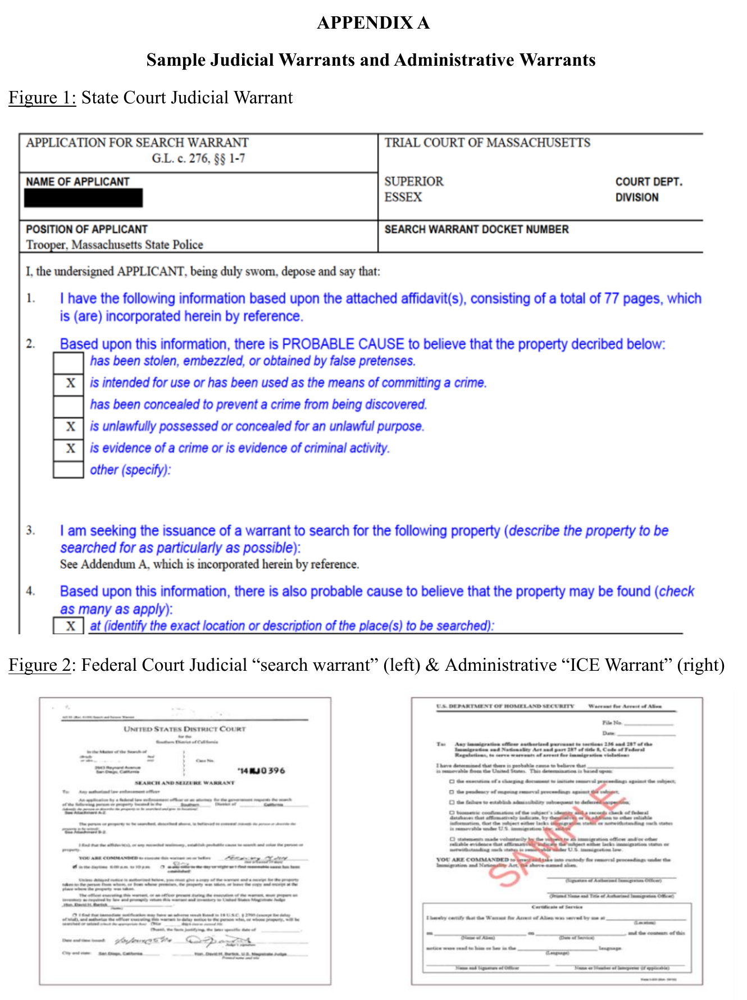

A quick overview for staff. For anything case-specific, connect the student with qualified legal help.
Check the signature line. Staff can ask to see the paper. Don’t physically block anyone. Call a lawyer or LUCE. Sample warrants: page 4.
LUCE hotline: 617-370-5023 (report ICE activity)
Police or courts breaking these rules: complain to the Attorney General (link on the MIRA hub, page 3)
Questions? Ask me: Marlie · 770-378-9207
mcreed@mlri.org · mcreed@ebhcs.org
Optional routes, not a required chain. Share only with the student’s consent.
Scan a code with a phone camera to open the page. You can share these with students.
Start here. Explainers in English, Spanish, Haitian Creole, Portuguese. Links to the AG complaint process.
miracoalition.org/resources/the-protect-act-8-5-2026Directory of immigration lawyers and legal aid groups in Massachusetts.
miracoalition.org/resources/legal-servicesWhat to do if ICE comes to your home, work, or car.
miracoalition.org/resources/know-your-rightsHealth care guidance. Appendix A (page 12) has the sample warrants on page 4 of this sheet.
mass.gov/doc/protect-act-guidance-and-model-policy-for-covered-health-care-providersFamily plan packets in 7 languages, caregiver form tools, help for detained parents.
miracoalition.org/family-preparednessIncludes form MPC 142 to name a standby guardian.
mass.gov/lists/probate-and-family-court-forms-for-guardianship-and-conservatorshipFull text of the PROTECT Act.
malegislature.gov/Laws/SessionLaws/Acts/2026/Chapter163The state’s official explanation of the law.
mass.gov/info-details/the-protect-actRules for ICE in Massachusetts courthouses.
mass.gov/policy-statement/massachusetts-trial-court-policy-on-interactions-with-united-states-immigration-and-customs-enforcementTop: a Massachusetts state court form (names the “Trial Court of Massachusetts”). Bottom left: a federal court warrant, signed by a judge. Bottom right: an ICE warrant (“U.S. Department of Homeland Security,” signed by an immigration officer). Only a judge’s warrant counts.
